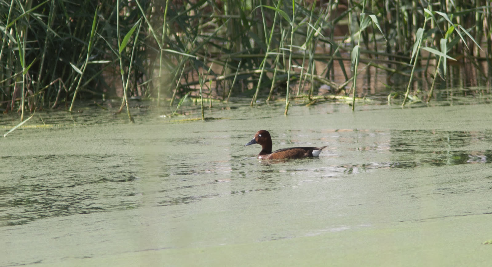

Prepared by Sayd | 8 September 2026
Birds that cross the sky carry a story longer than the distance we see. Behind every journey are breeding areas, rest and feeding stops, and places where they spend the winter. What happens at one of those stops can affect an entire journey spanning countries and continents.
With the autumn migration season, recent international news and reports offer a picture of the challenges these journeys face, and of the tools used to protect them: scientific research, habitat conservation, hunting regulation, and people’s participation in monitoring.
More than half of migratory species are declining
On 28 July, the British Trust for Ornithology (BTO) presented results of a global review published in the journal Nature Reviews Biodiversity, with researchers from international institutions including Georgetown University and the Smithsonian Institution.
The review finds that 51% of migratory bird species worldwide are declining in numbers. That percentage concerns species that are declining; it does not mean half of all bird numbers have disappeared.
Pressures include habitat loss, climate change and extreme weather, pesticides, disease, and collisions with buildings and structures. Researchers therefore call for protection that takes account of the bird’s full life cycle and links efforts among the countries it crosses. Source: BTO and the scientific review; results presented 28 July.
In Albania… flamingos at the heart of an environmental case
In a report published by BirdLife International on 7 September, attention returned to protests protecting the Vjosa–Narta area in Albania, after a hundred days of actions known as the “flamingo protests.”
According to the organization, the coastal area hosts more than two hundred bird species and lies on a migration route between Africa and Europe. The protests concern works and development projects inside a protected area and the risks they pose to wetlands.
BirdLife says the channel linking Narta Lagoon to the sea was closed during the works and then reopened, warning of the effect of disrupting water flow on the lagoon’s balance and birds’ food. The case reveals a basic side of protection: the bird needs a place fit for life when it lands. Source: BirdLife, 7 September 2026.
From Croatia to Egypt… interconnected stopovers

In a piece published on 26 August, BirdLife chose the Ferruginous Duck (English name as given in the source) to illustrate the importance of connectivity among migration stopovers. It notes that the species is classified as Near Threatened, and that its survival depends on the integrity of wetlands separated by vast distances.
The piece highlights the Pokuplje basin in Croatia and Lake Nasser in Egypt as important sites for this species and other waterbirds. It also presents a three-year initiative, supported by a grant of £7.5 million, to protect and restore sites on the African–Eurasian flyway.
The lesson of this journey is that protecting one site gains greater value when connected to protecting the other sites the bird needs. Source: BirdLife, 26 August 2026.
Regulated hunting… quotas monitored and decisions reviewed
On the hunting file, the European Federation for Hunting and Conservation (FACE), which represents hunters’ associations, published its 2026 report on the European Turtle Dove on 18 July.
The federation presents the experience of adaptive harvest management: setting quotas, recording birds taken, tracking when the allowed ceiling is reached, and closing the season when it is reached. According to its assessment, turtle dove numbers continue to rise on the western flyway, while the situation remains less positive on the central–eastern flyway.
These are results presented by a hunters’ federation and should be read in their specific context; they do not mean every bird species has recovered, nor do they provide a basis for generalizing hunting to other regions. But they put a practical question before the debate: how do we link permission to hunt to data on bird numbers and their capacity to recover, and to a real capacity to monitor? Source: FACE, July 2026 report.
What do we take away at Sayd?
These developments push us to see the season as an epistemic responsibility as well. Correct species identification, documenting sightings, protecting rest places, and respecting the law are elements that can bring together the responsible hunter, the birdwatcher, the photographer, and the researcher.
In our view, success in managing the season is measured by the clarity of its rules, the quality of its information, the effectiveness of their application, and by birds remaining able to continue their journey and return in coming years.